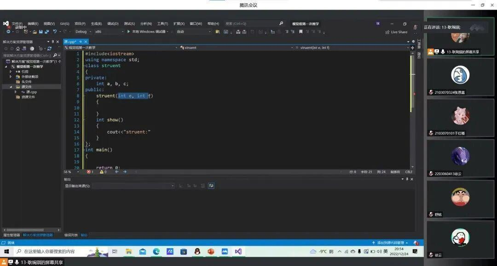
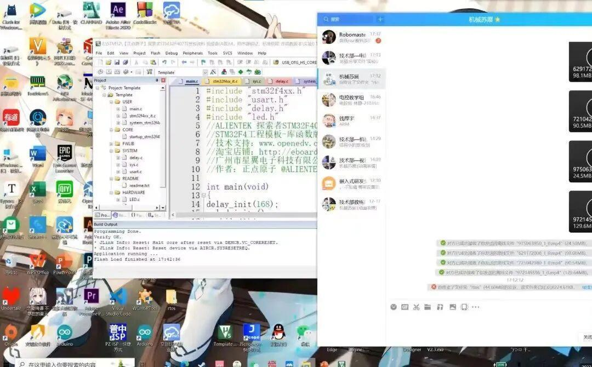
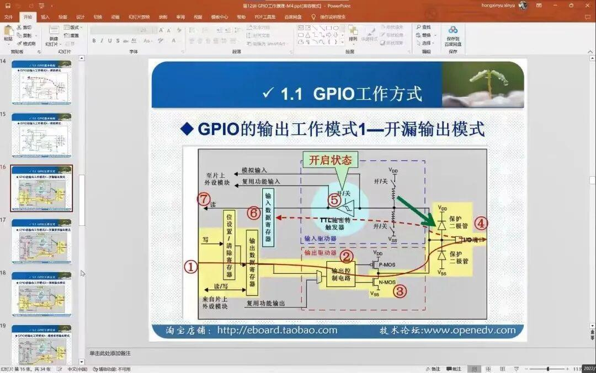
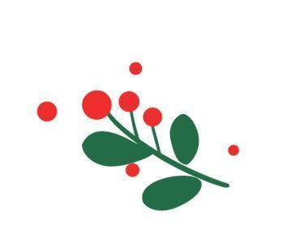
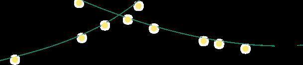

圣诞快乐
圣诞节是西方重要的传统节日。西方在圣诞节常互赠礼物，举行欢宴，并以圣诞老人、圣诞树等增添节日气氛，已成为普遍习俗。圣诞节也成为西方世界以及其他地区的公共假日。
时光静谧无声，在平安夜，我们电协电控组和视觉组开展了第一次教学任务，为节日更添欢乐向前的气氛。电协圣诞树上的星光，点亮我们前行之路！





圣诞节真的是一个即温柔又温暖的节日了,可以在这飘雪的岁末里，富有仪式感又温柔地对生命中珍贵的人说上一句“圣诞快乐，喜乐长安”


平安夜的钟声，敲响了我对你的思念。飘舞的雪花，诉说我对你的誓言。圣诞树上，为你结满幸福果实。在我心中，已点亮璀璨的彩灯。祝你：圣诞快乐，前途一片光明。


MERRY CHRISTMAS
Merry Christmas
Peace and happiness
Merry Christmas
Peace and happiness
电协期待与您共约圣诞节
圣诞节快乐

圣诞快乐
排版|小智
文字|小智
图片|沈理电协
审核|恩嘉